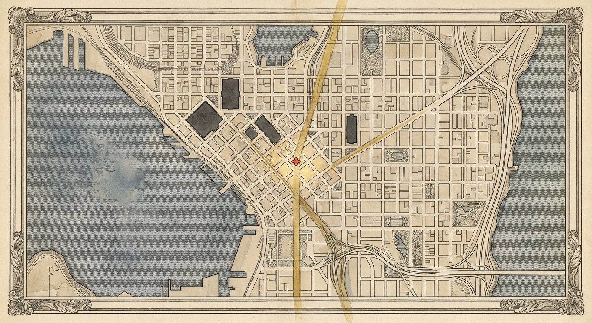
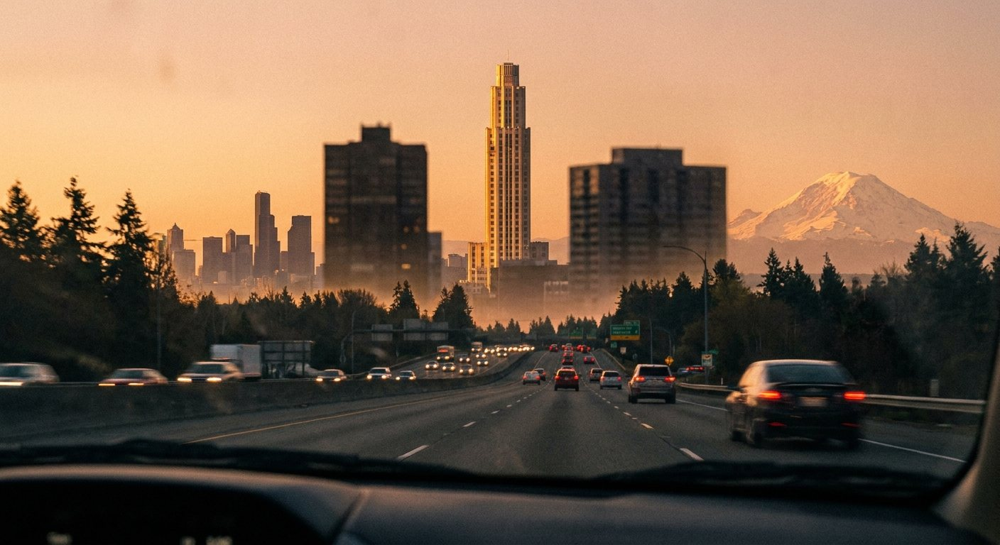
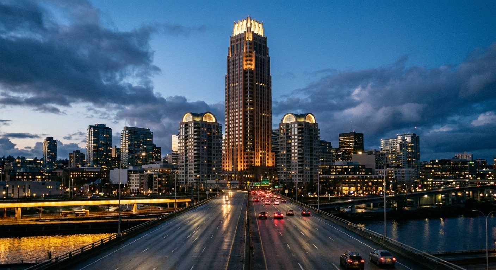

A skyline is a designed object. Most cities refuse to believe this. They treat the silhouette of their downtown as the accidental sum of forty separate financing decisions, and it shows. The cities that take it seriously, Paris composing its axis, Chicago arranging its wall of towers along the lakefront the way Burnham drew it in 1909, get skylines that read as one deliberate thing from the places people actually see them.
Start with a simpler question: where do people actually see Seattle's skyline? Strip out the helicopter shots and the marketing renderings, and the honest answer is a windshield on Interstate 5, hundreds of thousands of times a day. And from I-5 there are two moments, one coming up from the south and one coming down from the north, when the skyline presents itself whole.
South: I-5 northbound at SeaTac (47.4265 N, 122.2791 W), twelve miles out. The freeway crests and downtown rises off the horizon for the first time.
North: I-5 southbound at the crest of the Ship Canal Bridge (47.6521 N, 122.3226 W), three miles out. The deck climbs and the whole skyline opens across the water.
These are the two front doors of the city. Hundreds of thousands of people pass through them every day. Arriving from the airport, the SeaTac rise is the first time a visitor sees Seattle. Coming home from the north, the Ship Canal crest is the moment the city declares itself. No public space, no park, no viewpoint comes close to the daily audience of these two stretches of freeway.
And from both of them, the skyline says the same thing. Two masts hold the composition up: Columbia Center at 933 feet, the tallest building in Seattle since 1985, and Rainier Square Tower at 850 feet, finished in 2020. They stand about half a mile apart on the downtown spine. From the SeaTac rise they sit nearly in line, a front mast and a back mast. From the Ship Canal crest they frame the center of the view.
Between them: air. A sag in the middle of the composition, visible from both front doors at once. The skyline has a gap where its summit should be.
Run the sightline from each vantage point through the space between the two towers and the lines land on the same ground: the Fourth and Fifth Avenue spine between Cherry Street and University Street, centered around Fourth and Madison. This is the financial district's old heart, and it is conspicuously underbuilt for the most visible ground in the city.
The city has already seen what belongs there. In 2015, Crescent Heights proposed 4/C at Fourth and Columbia, on the half block between Cherry and Columbia: 1,111 feet and 102 stories, taller than Columbia Center by 178 feet. The FAA issued a notice of presumed hazard in January 2016 over SeaTac and Boeing Field flight paths and recommended 965 feet. The design came back at 1,029 feet and 93 stories. A decade later it remains unbuilt, and the gap remains a gap.
933 ft Columbia Center, tallest in Seattle since 1985, 41 years and counting
850 ft Rainier Square Tower, 2020
1,029 ft the FAA-shaped envelope already proven out by the 4/C review
0 buildings over 933 feet built, started, or permitted
That is the whole opportunity in four lines. The zoning in the downtown office core allows the height. The FAA review already established the real ceiling, in the band just above 1,000 feet. The most visible parcels in the city sit in the exact corridor where a summit tower would complete the composition from both freeway approaches at once. Forty-one years is a long time for a city this rich to go without raising its own roofline.
So we went looking for the parcel, and we found two answers. There is a site inside the gap that is already entitled for over 1,000 feet and is on the market right now at a discount to its 2015 price. And when we ran the sightline math properly, block by block, the geometry pointed at an even better piece of ground that nobody is talking about. Both are in the member file, along with the math.
Incorrect password.
Run the centerline of the gap from each vantage point and extend the two lines until they cross. From the SeaTac rise, Columbia Center and Rainier Square sit at bearings of 348.9 and 348.6 degrees, nearly one mast behind the other, and the center of that gap runs straight up the Fourth Avenue spine. From the Ship Canal crest, the same two towers sit at 186.4 and 190.5 degrees, and the centerline of the gap leaves the bridge at 188.5. The two lines intersect at 47.6078 north, 122.3323 west.
That point is the 1100 block of Fourth Avenue, between Spring and Seneca, one block north of the Central Library. Standing on it today: hotels and a parking garage. Mid-rise hospitality, not legacy towers, which makes the bullseye one of the most acquirable pieces of ground in the band. No entitlement exists there, and at this location that is a detail, not a wall, for reasons covered below.
We pulled the county assessor's roll for the block. Four parcels, four owners, and one of them is a gift:
| PIN | Parcel | Lot | Assessed Land | Assessed Improvements |
|---|---|---|---|---|
| 0942000170 | 415 Seneca St, the Olympic Hotel parking garage | 28,800 sf | $46.1M | $1,000 |
| 0942000210 | 400 Spring St, Executive Hotel Pacific | 8,325 sf | $13.3M | $18.3M |
| 0942000265 | 1100 Fifth Ave, Hotel Vintage | 14,400 sf | $23.0M | $14.8M |
| 0942000165 | 411 Seneca St, the W Seattle | 18,315 sf | $29.3M | $138.4M |
Start with the garage. It covers 28,800 square feet of the most geometrically valuable ground in the city, and the county values the structure on it at one thousand dollars. By the assessor's own arithmetic it is land waiting for a building. Add the two aging hotels on the Spring Street side, the Executive Pacific and the Vintage, and the assembly reaches 51,525 square feet across three owners, a full supertall floor plate, without ever knocking on the W's door. The W and its $138 million of improvements are only in play if someone wants the entire 69,840-square-foot block, and the better answer is that they stay: a 26-story shoulder standing next to the summit, the way Two Union stands next to nothing today.
The fallback assembly is the Monaco side across Fourth: the Kimpton Monaco at 1101 Fourth (19,980 sf), the single-story retail pad at 1119 Fourth, also assessed at one thousand dollars of improvements (3,060 sf), and the small Hotel Seattle at 315 Seneca (3,600 sf). About 26,600 square feet: tighter, cheaper, and still on the line.

Here is the measurement that belongs at the front of every conversation about this project. From the Ship Canal Bridge crest, the building that reads tallest is not Columbia Center. It is Two Union Square: 740 feet, the fifth tallest building in the city. Two Union stands about 600 meters closer to the bridge than Columbia Center and on higher ground at Sixth Avenue, so its roofline tops out at roughly 2.60 degrees of elevation against Columbia's 2.73. A tenth of a degree is below what the eye can resolve at that distance, and Two Union's lit twin arcs take the night outright. Visual height is what a skyline actually is, and by visual height the north front door of Seattle is owned by the number five building.
Worse, or better, depending on your seat: Two Union's bearing from the bridge is 188.6 degrees. It is sitting almost exactly on the gap centerline. The spot where the summit should stand is occupied by a 740-foot building doing an impression of one.
2.73° Columbia Center's apparent height from the Ship Canal crest
2.60° Two Union Square's, effectively a tie, with the better crown
188.6° Two Union's bearing from the bridge: dead center in the gap
~900 ft at the bullseye block to clearly out-rank Two Union from the north
933+ ft to be the true summit from every direction. Call it 1,000 and the argument ends
A tower on the 1100 block of Fourth rises directly behind Two Union's line as seen from the bridge. At 1,000 feet it caps Two Union exactly where Two Union currently fakes the summit, tops Columbia Center from every direction, and completes the composition from the south at the same time. One building fixes both front doors.


The 4/C entitlement fight established the working ceiling for downtown supertalls in the band just above 1,000 feet, and it was fought in 2016, under a different administration with a different posture toward building anything. The current Department of Transportation is the friendliest environment for a signature American tower in forty years; this is the same department running a national competition to make transportation infrastructure beautiful. An aeronautical review at the bullseye starts fresh, and the bullseye sits farther from the Boeing Field approach path than the 4/C site that already cleared 1,029 feet. The FAA is a process to run, not a reason to shrink the building before anyone has asked.
The west side of Fourth, the half block running from Cherry Street to Columbia Street, directly across from Columbia Center and dead center in the southern half of the gap. This is the 4/C site. Crescent Heights bought it in 2015 for roughly $49 million and spent years pushing the entitlement through design review and the FAA, landing on the 1,029-foot, 93-story envelope after the 2016 presumed-hazard fight.
In 2024 they put it on the market with pricing guidance around $40 million. Read that again: a decade of holding, a completed FAA fight, an entitlement for the tallest building on the West Coast outside California, offered below the 2015 purchase price, with ten years of inflation ignored on top. As of late 2025 there is no construction activity and no announced buyer. The most valuable air rights in the Pacific Northwest are sitting in a broker's deck.
$49M what Crescent Heights paid in 2015
~$40M the 2024 asking guidance
1,029 ft / 93 stories the FAA-shaped envelope already proven through review
0 competing parcels in the gap with an entitlement anywhere near this
The FAA file is the asset. Any new supertall proposal in downtown Seattle starts a multi-year aeronautical review with an uncertain outcome; this parcel already ran that gauntlet and came out with a number. The buyer also inherits the design review record, the half-block assemblage that nobody could reassemble today at this basis, and a position straight across Fourth Avenue from the building it would dethrone.
What it lacks is a story, which is why it has sat. Crescent Heights pitched 4/C as 1,090 residential units in a soft condo market, and the market shrugged. The composition argument sells something bigger: the summit of the skyline, the building that completes the view from both front doors of the city, the first thing four hundred thousand people see every day. Towers with a civic story pre-sell. Towers without one sit in broker decks for a decade. The parcel does not need rezoning. It needs a reason.
Four pieces of ground decide this, all within six blocks of each other on the Fourth Avenue spine.
| Parcel | Where | Status | The Play |
|---|---|---|---|
| The Bullseye (1100 block of Fourth) |
Fourth Ave between Spring and Seneca: the W Seattle (1112 Fourth, 26 stories) and Kimpton Monaco (1101 Fourth, 11 stories) blocks | No entitlement, no listing, no story attached. Mid-rise hotels on the exact intersection of both sightlines, one block north of the library | The perfect site. Assemble the hotel blocks and build the summit where the two lines cross, rising directly behind Two Union from the north view |
| 701 Fourth Ave (the 4/C site) |
West side of Fourth, half block from Cherry to Columbia, directly across from Columbia Center | Entitled at 1,029 ft / 93 stories with the FAA fight already won. Bought for ~$49M in 2015, listed 2024 around $40M, no announced buyer as of late 2025 | The summit site. Buy the entitlement at a discount, bring the civic story the last owner never had |
| King County Civic Campus (500 Fourth Ave and surrounds) |
Fourth Ave from James to Yesler, anchored by the County Administration Building | Admin Building vacant since 2022. County strategic plan covers roughly seven blocks, with master planning starting in 2025 and up to 7,800 homes floated | The south anchor. The county is openly shopping for a vision; the campus rebuild frames the skyline's base from the south approach |
| 3rd & Cherry (old Civic Square block) |
The full block across from City Hall | Bosa's 57-story, 629-ft condo tower entitled, excavated, and paused since 2022 on cost escalation. The pit is still there | The restart. An entitled hole in the ground a block from Columbia Center; at 629 ft it fills the gap's south shoulder while the summit goes up across the street |
The geometry favors the bullseye; the balance sheet favors 701 Fourth, where the entitlement is already bought and paid for and the land is on sale below its 2015 basis. Either one works. The bullseye is the perfect building; 701 Fourth is the fast one. The crown, wherever it lands, follows the Modern Deco direction in The Busan Standard style file: setback massing, vertical masonry piers, a lit crown designed for the two freeway vantage points, the Ship Canal Bridge crest where it caps Two Union, and every window seat into SeaTac.
One condition, and it is not negotiable: the building that fills the gap cannot be another glass box. A summit tower is the city's signature, seen by more people than any other object in Washington State. It follows the material standard: masonry and stone at the street, a real crown at the top, a silhouette designed for the two vantage points it will live in. Columbia Center gave Seattle height with a black curtain wall. The next tallest should give Seattle height the way the Smith Tower gave it height in 1914, as a piece of architecture the city is proud to be measured by.
And the freeway is only half the audience. The other half is in the air. Every approach into SeaTac carries a plane full of window seats over this region, and what they see today is gravel roofs and curtain wall, a city that reads as nothing from above. Masonry reads from altitude. A sculpted, lit crown reads from altitude. This is the same case we make in the material standard work: a city you can recognize from the air is a city that markets itself every single day, on every single flight, for free. The summit tower is where that starts.
We are publishing the vantage-point doctrine so the conversation starts from composition, not from parcel-by-parcel accident. We are mapping ownership, entitlement status, and development capacity for every parcel in the Fourth-and-Fifth Avenue band between Cherry and University, building on our permit tracker and parcel intelligence work. And we are taking the composition case, and the parcel file above, to the development community directly: the FAA ceiling plus the sightline gap define a once-per-century envelope, roughly 1,000 feet of permitted air over the most-watched ground in the Pacific Northwest, waiting for someone with the nerve Seattle had in 1914.
Drive north from the airport and look at the hole in the skyline. Then ask why a city that builds everything else refuses to finish its own silhouette.
Want to support this operation, contribute expertise, or join as a member? Tell us who you are and how you want to help.